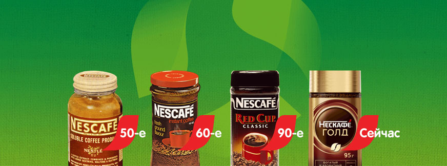

При производстве кофе мы тесно сотрудничаем с организацией Rainforest Alliance®. Вместе мы собираем и анализируем данные о влиянии нашей работы на сельскохозяйственную экономику, экологию и социальную сферу. Это помогает нам меняться к лучшему и обеспечивать устойчивое развитие для тысяч кофейных ферм.
Ответственное отношение компании НЕСКАФÉ® начинается с фермеров, которые выращивают наш кофе. Они — настоящие герои, и мы с гордостью называем их своими партнерами.
Наша цель — поддерживать саморазвитие фермеров
Нам важно помогать фермерам улучшать условия жизни и повышать уверенность в завтрашнем дне. Поэтому мы учим людей вести бизнес и распоряжаться доходами. В рамках программы «кофе НЕСКАФÉ® План» мы организовали уже более 700 000 тренингов.
Наши эксперты приезжают на фермы и рассказывают об инновационных экологически-оптимальных методах выращивания кофе. Так мы обеспечиваем стабильное будущее кофейной индустрии, помогаем фермерам больше зарабатывать, беречь здоровье и работать в гармонии с природой.
Дружба прежде всего
Какие у вас отношения с коллегами? Наверное, вы пьете вместе кофе. Иногда ходите на обед. Но вряд ли вас пригласят на свадьбу. А вот наши специалисты не раз и не два гуляли в Мексике на свадьбах фермеров. Между агрономами НЕСКАФÉ® и фермерами завязалась крепкая дружба. На каминных полках стоят совместные фото, а земледельцы буквально зачеркивают дни в календаре до следующей встречи. Ничего удивительного — ведь этим отношениям уже несколько десятков лет.
Содействие в трудные времена
Мы поддерживали фермеров в трудные времена — например, во время кризиса 2012–2015 годов, когда кофейные деревья пострадали от грибка, и многие семьи могли остаться без средств к существованию. 33 000 фермеров получили от нас больше 37 миллионов устойчивых к болезням саженцев кофе. Выживаемость новых растений составила около 90%. Следующие несколько лет мы помогали за ними ухаживать. Теперь фермеры пожинают плоды: в ключевых регионах Чьяпас и Веракрус урожайность удвоилась.
Связь с несколькими поколениями
Некоторые из фермеров, с которыми мы работаем сегодня, — дети или внуки земледельцев, которых мы когда-то поддержали. «Можно сказать, что у нас коричневая кровь!» — говорит Альфредо из Веракруса, фермер, сын и внук фермера.
Помощь в саморазвитии
Мы обучили более 2 000 кенийских женщин нюансам современного бизнеса — например, тому, что нужно вести записи об объеме урожая, продажах и расходах. Они дают своим подругам советы и показывают личный пример. Мы помогаем кенийским женщинам вести кофейный бизнес, чтобы они могли построить успешное будущее. И вкус этого успеха есть в каждой чашке кофе НЕСКАФÉ®.
Чем более естественным и уважительным путём выращены кофейные зёрна, тем вкуснее будет кофе в вашей чашке. Особенно, если над ним трудились поколения. Вспомните об этом, когда будете пить кофе НЕСКАФÉ® в следующий раз.
Наши цели:
Стимулировать биологическое разнообразие на фермах
Наши фермеры-партнеры занимаются мультикультурным земледелием. За год на одном участке они получают урожай от нескольких растений сразу. Кроме того, мы предоставляем им бонусы за ответственное отношение к природе.
Соблюдать стандарты кофейной индустрии
Мы придерживаемся ответственного подхода к выращиванию кофе, и это подтверждают международные организации 4C (Common Code Coffee Certification), Rainforest Alliance и UTZ. Мы с уважением относимся к фермам и активно вовлечены во все этапы работы. С 2010 года мы помогли посадить более 220 миллионов кофейных деревьев по всему миру для обеспечения высокого качества нашего кофе.
Кофейные деревья со временем истощаются и приносят меньше урожая. Старые искривленные деревья дают урожай уже нескольким поколениям фермеров из Кот-д'Ивуара, но постепенно ягод становится всё меньше и меньше. Совет агрономов НЕСКАФÉ® суров: обрезать деревья до пеньков. Но с отросших веток урожай будет выше, а следовательно, фермеры получат больше прибыли.
Конечно, сложно замахнуться топором на старого надежного друга. Пока рискнули сделать этот шаг треть фермеров. Но первые результаты уже видны. В том числе благодаря саженцам робусты, которые мы привезли на фермы. После полной обрезки и рядом с молодой робустой кофейные деревья переживают второе рождение: зерен стало больше, они увеличились в размере, повысилось качество урожая. Для фермеров это означает хороший доход и процветание. Поздравляем, Кот-д'Ивуар, ваша решительность вознаграждена сполна! И в каждой чашке кофе НЕСКАФÉ® есть вкус вашей отваги.
Наши цели:
Нейтрализовать выбросы углекислого газа от поставки и переработки кофе
Мы стремимся снизить количество углекислого газа, который выделяется при производстве кофе. Глобальная цель в этом направлении — сократить выбросы вредного вещества до нуля.
Экономить воду
Нам важно ответственно относится к ресурсам планеты. Мы стараемся сократить потребление воды на кофейных фермах и предприятиях по переработке кофе, а также в домах потребителей продукции кофе НЕСКАФÉ®.
Остановить изменение климата
Кофейные фермы помогают решать проблему экономии воды в странах, где для выращивания кофе используют оросительные системы. Так, во Вьетнаме, программа «кофе НЕСКАФÉ® План» позволяет фермерам тратить на 30–40% меньше воды и по-прежнему получать большой урожай.
Чтобы расти, кофе нужно много воды. Но мы не хотим, чтобы это отразилось на местном населении. Наш кофе часто выращивают там, где воды не хватает, поэтому перед нами стоит важная задача — помочь фермерам тратить запасы с умом. Мы гарантируем: там, где рождается наш кофе, никто не страдает от жажды.
Наш повод для гордости — экономия воды на кофейных фермах во Вьетнаме. Мы доказали, что для орошения можно использовать на 50–70% меньше воды, и качество кофе от этого не пострадает. Если так сделают все фермеры, это поможет сберечь столько воды, что её хватит трети населения страны на целый год.
Также мы разработали бесплатное погодное приложение, которое каждый фермер может настроить под свои нужды. Оно подсказывает, когда орошение можно включить на максимум, а когда лучше закрыть краны, чтобы не пострадали другие жители деревни.
Мы повысили эффективность наших фабрик (кстати, они часто находятся недалеко от кофейных ферм). Теперь в год мы экономим 7 850 олимпийских бассейнов воды. Этого хватит на 56 миллиардов чашек кофе — если их составить на экватор, линия обогнет Землю 126 раз! Каждый раз, когда вы пьёте кофе кофе НЕСКАФÉ®, помните, как важен для нас кофе. Но питьевая вода для людей — еще важнее.
Когда вы слышите что-то об энергии пара, то наверняка представляете старые локомотивы из исторических романов. Но сердца наших самых современных и экологичных заводов бьются именно благодаря пару. Например, как, по-вашему, делают кофейные гранулы? При помощи чистой воды и пара.
Топливом для наших заводов стали отходы от переработки кофе, которые обычно утилизируют, поэтому пар мы получаем экологично. А с новым оборудованием изготовление гранул кофе кофе НЕСКАФÉ® Classic требует на 50% меньше пара.
Мы с гордостью заявляем, что за последние 10 лет вдвое сократили выброс углекислого газа. Каждый год атмосфера «недополучает» от наших фабрик столько же СО2, сколько от 1 058 пассажирских джетов. Но мы продолжим совершенствовать производство, пока выхлоп не станет нулевым. Наслаждаться ароматным паром от кружки горячего кофе НЕСКАФÉ® ещё приятнее, когда вы знаете, что его изготовили с минимум выбросов СО2.
Готовить кофе можно по-разному. Меньше всего электричества нужно, чтобы приготовить кофе в гранулах — такой, как кофе НЕСКАФÉ®. Если вы выпьете всего одну чашку, то не обязательно ставить полный чайник. А еще можно не греть воду до 100°C: рискуем показаться очевидными, но кофе — это не чай, который заваривают только крутым кипятком. Лучшая температура для растворимого кофе НЕСКАФÉ® — 80°C. Слишком горячая вода перегреет кофе, и часть его насыщенного аромата пропадёт. Кроме того, до 80°C вода нагреется быстрее, чем до 100°C, и вам не придётся долго ждать.
Даже такое небольшое изменение помогает беречь электричество. Если три раза в день кипятить полный чайник, за год на это уйдёт 110 кВт/ч электроэнергии. А если вместо этого каждый раз нагревать воду до 80°C, то за тот же год вы сэкономите 22 кВт/ч. Этого хватит на 1 375 часов работы жидкокристаллического телевизора диагональю 50 дюймов.
Многие современные модели чайников поддерживают заданную температуру воды. Но тратиться на такой не обязательно. Можно просто налить воду в кастрюлю, поставить на плиту и подождать, когда появятся пузырьки. Это значит, что вода нагрелась до 80°C и закипела.
Когда вы пьете кофе НЕСКАФÉ®, вы выражаете уважение к ресурсам нашей планеты. Давайте вместе заботиться о мире, который окружает всех нас!
Если бы банка кофе НЕСКАФÉ®, которая стоит у вас на кухне, могла говорить, то что бы она рассказала о своей предыдущей жизни? Может быть, она была банкой с вареньем. Или бутылкой из-под газировки. Или даже другой банкой НЕСКАФÉ®!
Перерабатываемая упаковка — наша гордость
Мы гордимся тем, что продаем наш кофе в стекле, потому что стекло можно снова и снова перерабатывать без потери качества. Ещё один весомый аргумент — каждая тонна переработанного стекла экономит больше тонны природных ресурсов. На тонну переработанного стекла, из которого делают банки для кофе НЕСКАФÉ®, приходится в среднем 670 кг CO2*.
Фабрики, которые делают для нас банки, видят в переработке много плюсов. Она помогает сэкономить на электричестве, им не нужно закупать сырье в больших объемах, а работа со старым стеклом продлевает срок службы стекловаренных печей.
Когда стеклянная банка вашего любимого кофе НЕСКАФÉ® закончится, вы знаете, что с ней сделать. Выбросите ее в подходящий контейнер для перерабатываемого мусора. И кто знает, может быть, однажды вы увидите ее снова!
Чтобы помочь планете, можно, например, пересесть с личного авто на общественный транспорт или добираться на работу на велосипеде, самокате или скейте. Все это уменьшает количество выхлопных газов. Но на экологию может повлиять даже скромная чашка кофе. Мы хотим, чтобы как можно больше людей отказались от одноразовых стаканчиков и кружек. Поэтому придумали для вас пару вариантов, когда можно использовать многоразовую посуду, а не пластик.
Вместо кофе с собой из ближайшей кофейни приготовьте дома ароматный кофе НЕСКАФÉ® и возьмите с собой на работу. В итоге мусора будет меньше — останется только наша упаковка, которую можно сдать на переработку. К тому же, если вы не будете покупать кофе даже пару дней в неделю, то неплохо сэкономите.
Принесите из дома кружку и в офисе пейте кофе из неё. Расскажите коллегам, почему вы решили отказаться от пластиковых стаканчиков: важно распространять информацию об ответственном отношении к природе, как это делаем мы.
Уже 80 лет вкус кофе НЕСКАФÉ® помогает рабочим будням стать ярче. Давайте наслаждаться кофе и не пользоваться пластиком — так мы вместе позаботимся о будущем.
Мы заботимся об экологии, когда выращиваем и производим кофе. Но последний шаг остаётся за вами. Наслаждайтесь кофе НЕСКАФÉ® и помогайте сохранять окружающую среду.